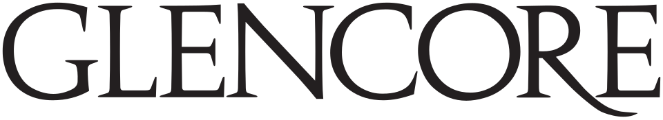
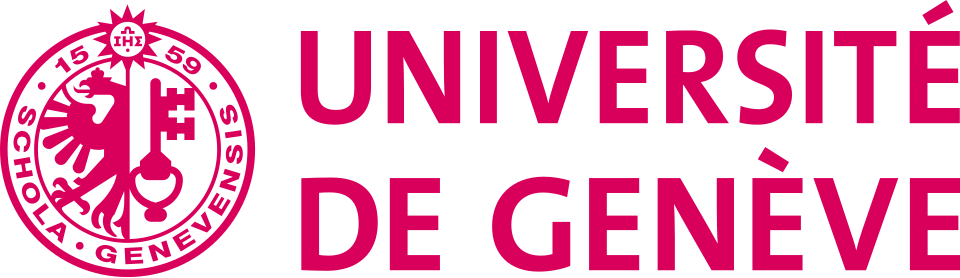
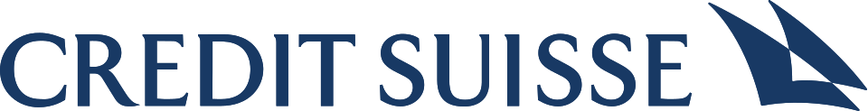
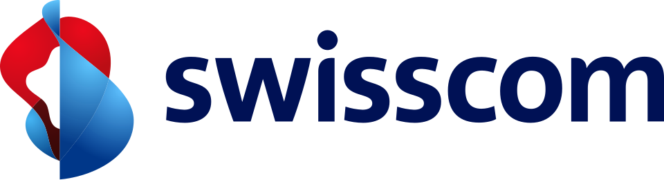
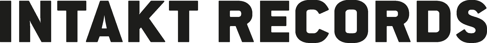
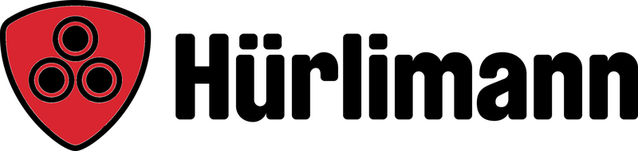

스위스 브랜드 45
스위스에서 시작한 브랜드 45개를 로고와 함께 모았습니다. 대표적인 스위스 브랜드로는 국제자연보전연맹(International Union for Conservation of Nature), 네슬레(Nestlé), 롤렉스(ROLEX), 스위스 국제항공(Swiss International Air Lines), UBS, 로지텍(Logitech) 등이 있습니다. 수록 기준은 검수된 브랜드 설명이나 공식 웹사이트가 일치하는 위키데이터 개체에서 기원 국가가 확인된 경우로 한정했습니다.
다른 국가 보기
국가별 전체 →산업별로는 패션·럭셔리 9개, 식음료 8개, 기술·전자 6개, 모빌리티 5개 순입니다. 설립연도가 확인된 브랜드는 41개이며 가장 오래된 곳은 1832년, 가장 최근은 2013년에 시작했습니다. 시기별로는 1900년 이전 18개, 1900~1949년 6개, 1950~1999년 13개, 2000년 이후 4개입니다. 수록 자료로는 로고 이미지 45개, 로고 변천 자료 5개, 연혁 타임라인 6개를 갖췄습니다. 이 가운데 43개는 공식 웹사이트가 일치하는 위키데이터 개체로 연결해 두었습니다.
산업별 스위스 브랜드
스위스 브랜드 목록
네슬레(Nestlé)는 스위스 브베에 본사를 둔 세계 최대 규모의 식음료 다국적 기업이다.
 롤렉스ROLEX스위스 · 1905년
롤렉스ROLEX스위스 · 1905년롤렉스(Rolex)는 스위스 제네바에 본사를 둔 럭셔리 시계 제조사이다.
오메가(OMEGA)는 스위스 스와치 그룹 산하의 럭셔리 시계 제조 브랜드이다.
 태그호이어TAG Heuer스위스 · 1860년
태그호이어TAG Heuer스위스 · 1860년태그호이어(TAG Heuer)는 1860년 에두아르 호이어가 설립한 스위스 고급 시계 제조사이다.
 인터스포츠Intersport스위스 · 1968년
인터스포츠Intersport스위스 · 1968년인터스포츠(INTERSPORT)는 1968년 스위스에서 설립된 독립 스포츠용품 소매상들의 국제 협동조합이다.
 스위스에어Swissair스위스 · 1981년
스위스에어Swissair스위스 · 1981년스위스에어(Swissair)는 스위스의 옛 국적 항공사다.
 스위스리Swiss Re스위스 · 1863년
스위스리Swiss Re스위스 · 1863년스위스리(Swiss Re)는 1863년 스위스 취리히에서 설립된 재보험 회사이다.
 로지텍Logitech스위스 · 1981년
로지텍Logitech스위스 · 1981년로지텍(Logitech)은 스위스 로잔에 본사를 둔 컴퓨터 주변기기 및 소프트웨어 다국적 제조 기업이다.
 호프만 라 로슈Hoffmann-La Roche스위스 · 1896년
호프만 라 로슈Hoffmann-La Roche스위스 · 1896년호프만 라 로슈(Hoffmann-La Roche)는 스위스 바젤에 본사를 둔 다국적 헬스케어 기업이다.
 브라이틀링Breitling스위스 · 1884년
브라이틀링Breitling스위스 · 1884년브라이틀링(Breitling)은 1884년 스위스 Saint-Imier에서 Léon Breitling이 창립한 스위스 고급 시계 제조사이다.
 ST마이크로일렉트로닉스STMicroelectronics스위스 · 1987년
ST마이크로일렉트로닉스STMicroelectronics스위스 · 1987년ST마이크로일렉트로닉스(STMicroelectronics)는 스위스 제네바에 본사를 둔 전자 제품과 반도체 생산 기업이다.
 국제자연보전연맹International Union for Conservation of Nature스위스 · 1948년
국제자연보전연맹International Union for Conservation of Nature스위스 · 1948년국제자연보전연맹(International Union for Conservation of Nature)은 전 세계 자원 및 자연 보호를 위해…
 테트라팩Tetra Pak스위스 · 1943년
테트라팩Tetra Pak스위스 · 1943년테트라팩(Tetra Pak)은 스위스에 본사를 둔 스웨덴 출신의 다국적 식품 포장·가공 기업이다.
 론진Longines스위스 · 1832년
론진Longines스위스 · 1832년론진(Longines)은 스위스 Saint-Imier에 본사를 둔 시계 제조사이다.
 1970년 설립된 스위스 해운 회사Mediterranean Shipping Company스위스 · 1970년
1970년 설립된 스위스 해운 회사Mediterranean Shipping Company스위스 · 1970년Mediterranean Shipping Company(MSC)는 스위스 제네바에 본사를 둔 국제 해운 회사로, 선대 규모와 화물 적재 용량…
 라도Rado스위스 · 1917년
라도Rado스위스 · 1917년라도(Rado)는 스위스 베른주 렝나우에 본사를 둔 시계 제조사이다.
 노바티스Novartis스위스 · 1996년
노바티스Novartis스위스 · 1996년노바티스(Novartis)는 스위스 바젤에 본사를 둔 다국적 제약회사이다.
 스위스 연방 철도Swiss Federal Railways스위스 · 1902년
스위스 연방 철도Swiss Federal Railways스위스 · 1902년스위스 연방 철도(Swiss Federal Railways)는 스위스의 국철이자 철도 공기업이다.

글렌코어Glencore스위스 · 1974년글렌코어(Glencore)는 스위스 바르에 본사를 둔 다국적 상품 무역 및 광업 회사이다.
 마지Maggi스위스 · 1886년
마지Maggi스위스 · 1886년마지(Maggi)는 19세기 후반 스위스에서 시작된 조미료, 즉석 수프, 국수 브랜드이다.
 빅토리녹스Victorinox스위스 · 1884년
빅토리녹스Victorinox스위스 · 1884년빅토리녹스(Victorinox)는 스위스 아미 나이프(Swiss Army Knife)를 비롯해 가방, 시계, 키친 나이프, 향수 등을 선보이는…
 아데코 그룹The Adecco Group스위스 · 1997년
아데코 그룹The Adecco Group스위스 · 1997년아데코 그룹(The Adecco Group)은 스위스 취리히에 본사를 둔 인력 서비스 기업이다.
 메틀러 톨레도Mettler Toledo스위스 · 1991년
메틀러 톨레도Mettler Toledo스위스 · 1991년메틀러 톨레도(Mettler Toledo)는 연구, 품질 관리, 제조 공정에 쓰이는 정밀 기기와 서비스를 실험실, 산업, 제품 검사, 식품…
 TE 커넥티비티TE Connectivity스위스 · 2007년
TE 커넥티비티TE Connectivity스위스 · 2007년TE 커넥티비티(TE Connectivity)는 전기·전자 부품을 설계하고 제조하는 미국-아일랜드계 기술 기업이다.

제네바 대학교University of Geneva스위스제네바 대학교(University of Geneva)는 스위스 제네바에 위치한 공립대학교이다.
 온On AG스위스 · 2010년
온On AG스위스 · 2010년온(On AG)은 러닝화와 스포츠 의류를 디자인하고 판매하며 독자적인 쿠셔닝 기술을 신발에 적용하는 스위스의 운동화 및 퍼포먼스 스포츠웨어…
 린트 & 슈프륀글리Lindt & Sprüngli스위스 · 1845년
린트 & 슈프륀글리Lindt & Sprüngli스위스 · 1845년린트 & 슈프륀글리(Lindt & Sprüngli)는 스위스 킬히베르크에 본사를 둔 초콜릿 회사이다.
 파텍 필립Patek Philippe & Co.스위스 · 1839년
파텍 필립Patek Philippe & Co.스위스 · 1839년파텍 필립(Patek Philippe & Co.)은 스위스 제네바에 본사를 둔 시계 제조 회사이다.
 립벨 그룹Liebherr Group스위스 · 1949년
립벨 그룹Liebherr Group스위스 · 1949년립벨 그룹(Liebherr Group)은 독일의 건설 장비 제조 업체이다.
 바쉐론 콘스탄틴Vacheron Constantin스위스
바쉐론 콘스탄틴Vacheron Constantin스위스바쉐론 콘스탄틴(Vacheron Constantin)은 1755년 스위스에서 설립된 고급 시계 제조사이다.

크레디트 스위스Credit Suisse스위스 · 1856년크레디트 스위스(Credit Suisse)는 취리히에 기반을 두고 투자은행, 프라이빗 뱅킹과 자산운용을 제공해온 스위스 금융기관이며 현재…
 마무트 스포츠 그룹Mammut스위스 · 1862년
마무트 스포츠 그룹Mammut스위스 · 1862년마무트 스포츠 그룹(Mammut)은 스위스의 등반, 설상 스포츠, 트레일 러닝, 트레킹 등 산악 스포츠용 의류와 장비를 제조하는 업체이다.

스위스컴Swisscom스위스 · 1997년스위스컴(Swisscom)은 스위스의 주요 통신사업자이다.
 스위스 국제항공Swiss International Air Lines스위스 · 2002년
스위스 국제항공Swiss International Air Lines스위스 · 2002년스위스 국제항공(Swiss International Air Lines)은 2002년에 도산한 스위스 항공을 대체하여 설립된 스위스의 국책…
 스마트Smart스위스 · 1994년
스마트Smart스위스 · 1994년스마트(Smart)는 스위스의 스와치 그룹과 독일의 메르세데스-벤츠 그룹 AG가 1994년에 합작으로 설립한 고급 자동차 브랜드이다.
 Stake 포뮬러 원 팀 KICK 자우버Sauber Motorsport스위스 · 1970년
Stake 포뮬러 원 팀 KICK 자우버Sauber Motorsport스위스 · 1970년Stake 포뮬러 원 팀 KICK 자우버(Sauber Motorsport)는 스위스에 본사를 둔 포뮬러 원 팀이다.

인탁트 레코드Intakt Records스위스 · 1986년인탁트 레코드(Intakt Records)는 1986년 파트릭 란돌트가 스위스 취리히에서 설립한 재즈 레이블이다.
 International Watch Company스위스 · 1868년
International Watch Company스위스 · 1868년IWC(International Watch Company)는 1868년 스위스 샤프하우젠에서 설립된 고급 시계 제조사이다.

Hürlimann Brewery스위스 · 1836년Hürlimann Brewery는 1836년에 설립되어 스위스 취리히에 있던 양조장이다.
Feldschlösschen스위스 · 1876년Feldschlösschen은 스위스 라인펠덴에 본사를 둔 음료·양조 회사이다.
 Calanda Bräu스위스
Calanda Bräu스위스Calanda Bräu는 독일어로 'Calanda 양조'를 뜻하는 이름의 양조장으로, 스위스 그라우뷘덴주 쿠어에 있으며 Heineken…
 Cardinal Brewery스위스
Cardinal Brewery스위스Cardinal Brewery는 1788년 François Piller가 스위스 프리부르에 세운 양조장에서 비롯된 스위스 맥주 브랜드이다.
 UBS스위스 · 1854년
UBS스위스 · 1854년UBS(UBS)는 스위스 바젤과 취리히에 본사를 두고 프라이빗 뱅킹, 투자은행, 자산관리와 소매금융을 운영하는 글로벌 금융 기업이다.
 Chubb Corp.스위스 · 1882년
Chubb Corp.스위스 · 1882년Chubb Corp.는 재산·상해보험을 중심으로 상해·건강보험, 재보험, 생명보험을 제공하는 미국·스위스계 글로벌 보험 브랜드이다.
 Proton Mail스위스 · 2013년
Proton Mail스위스 · 2013년ProtonMail(Proton Mail)은 2013년 스위스 제네바에서 설립된 종단간 암호화 이메일 서비스이다.